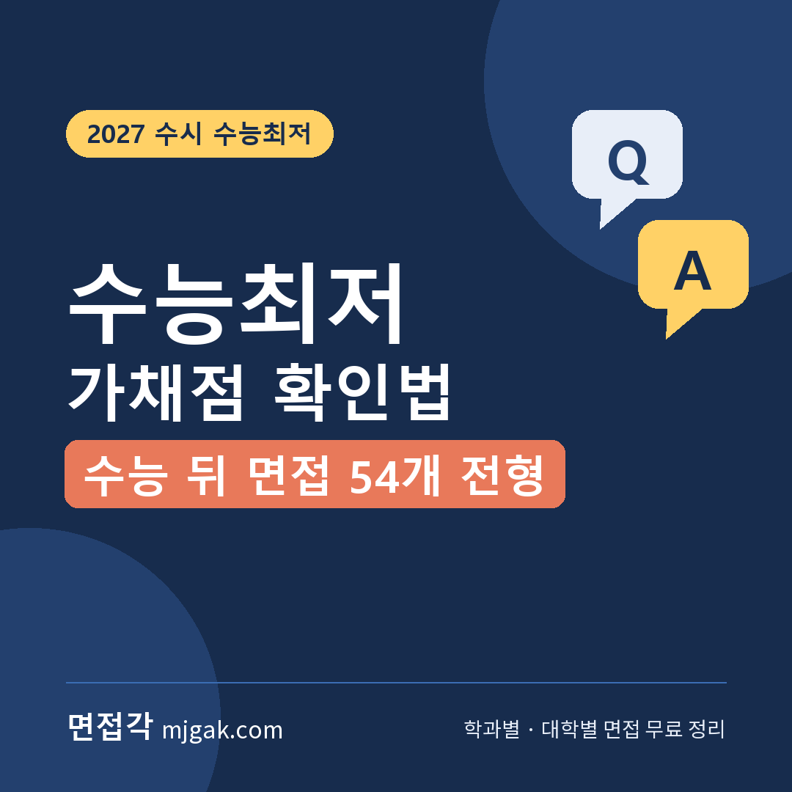
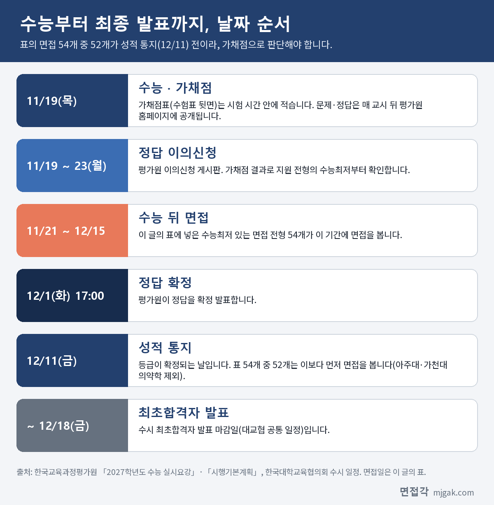
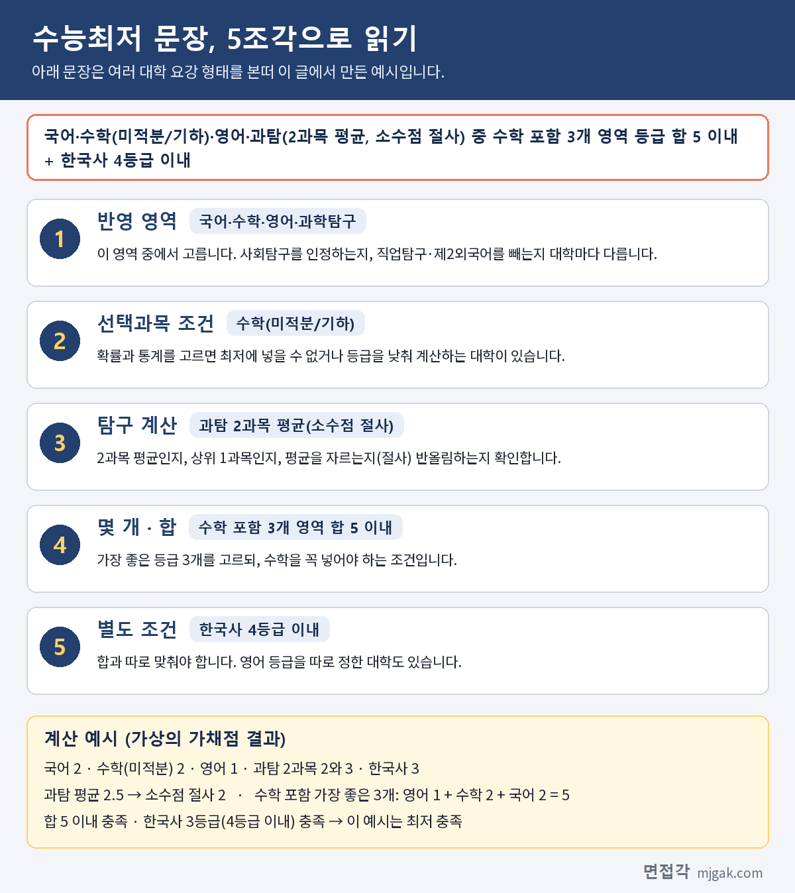
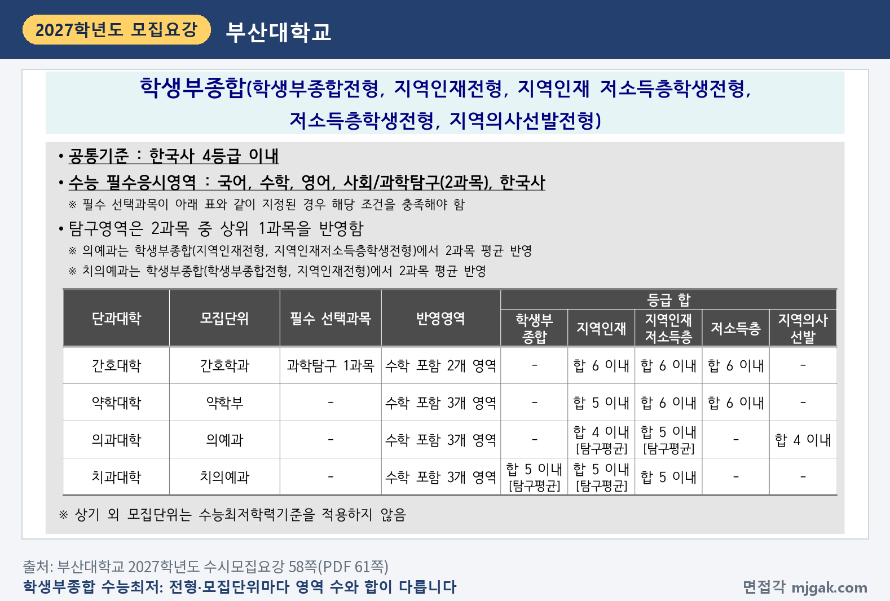
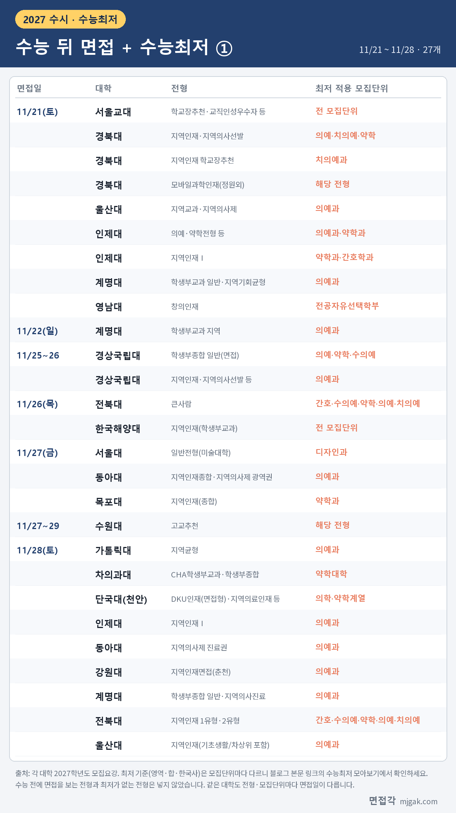
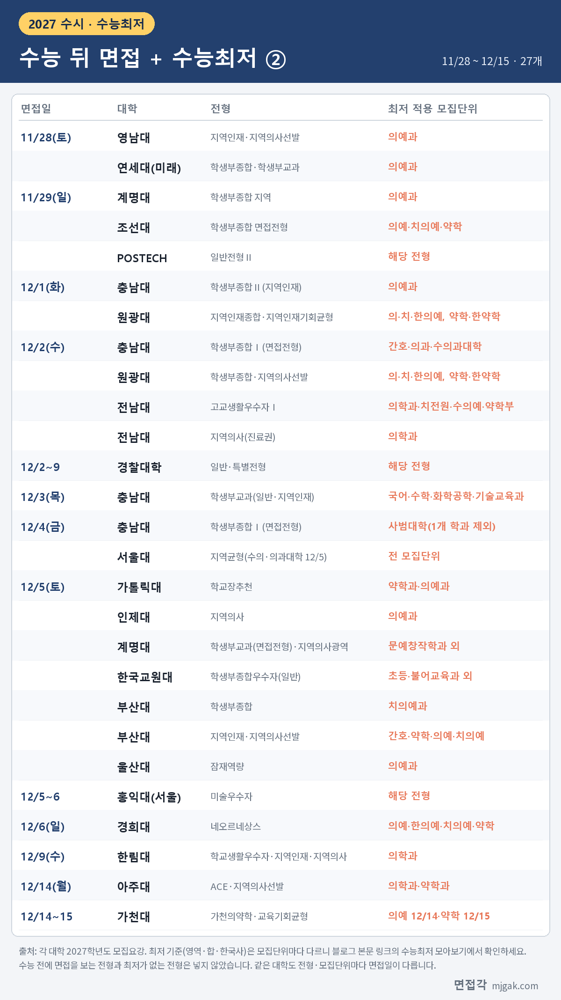

Ctrl+V (서식 유지됨)제목
본문 (이 영역 전체가 복사됩니다)
📷 여기에 이미지 넣기 — 썸네일 — thumb-minimum.png (대표 이미지로 지정)
수능이 끝난 날 저녁, 가장 먼저 할 일은 가채점입니다. 그리고 가채점 결과로 내가 지원한 전형의 수능최저학력기준(수능최저)을 맞췄는지 따져 봐야 합니다. 이 글에서 모은 수능 뒤 면접 전형 54개 중 52개가 성적 통지(12월 11일) 전에 면접을 보기 때문에, 면접을 보러 갈지와 무엇을 먼저 준비할지를 가채점으로 판단해야 합니다. 이 글은 2027학년도 수능 날짜 순서, 가채점 규정, 수능최저 문장을 읽는 법을 정리하고, 면접각이 모집요강에서 확인한 대학 중 수능 뒤에 면접을 보면서 수능최저가 있는 전형 54개를 날짜순으로 모았습니다. 수시 면접을 앞둔 고3과 재수생, 학부모님이 읽으시면 됩니다.
1. 수능부터 최종 발표까지, 날짜부터 보세요
📷 여기에 이미지 넣기 — 도식 — minimum-timeline.png
2027학년도 수능은 2026년 11월 19일(목)입니다. 문제와 정답은 시험 당일 매 교시가 끝난 뒤 평가원 홈페이지에 공개되고, 정답 이의신청은 11월 23일(월)까지, 정답 확정은 12월 1일(화) 17시, 성적 통지는 12월 11일(금)입니다. 수시 최초합격자 발표는 12월 18일(금)까지입니다.
이 글의 표에 넣은 54개 전형 중 52개는 성적 통지 전에 면접을 봅니다. 성적 통지 뒤에 면접을 보는 곳은 아주대 ACE·지역의사선발(12월 14일)과 가천대 가천의약학·교육기회균형(의예과 12월 14일, 약학과 12월 15일)뿐입니다.
2. 가채점, 이렇게 하세요
2027학년도 수능부터 수험표 뒷면에 가채점표가 공식적으로 들어갑니다. 다만 매 교시 종료령이 울린 뒤 가채점표를 쓰면 부정행위입니다. 답을 옮겨 적는 것은 시험 시간 안에 끝내세요.
가채점 뒤에 보는 "예상 등급컷"은 평가원이 내는 자료가 아닙니다. 공식 등급 구분 점수는 성적 통지 때 나옵니다. 그래서 가채점 등급이 기준 바로 위아래(경계)라면 한쪽으로 단정하지 말고 두 경우를 모두 생각해 두는 것이 좋습니다. 영어와 한국사는 절대평가라 원점수로 등급을 바로 알 수 있습니다. 영어는 90점 이상이 1등급이고 10점마다 한 등급씩, 한국사는 50점 만점에 40점 이상이 1등급이고 5점마다 한 등급씩 내려갑니다.
3. 수능최저 문장, 5조각으로 읽기
📷 여기에 이미지 넣기 — 이미지 1 — minimum-parts.png
수능최저 문장은 길지만 다섯 조각으로 나누면 읽기 쉽습니다. 반영 영역, 선택과목 조건, 탐구 계산 방식, 몇 개 영역의 합, 한국사 같은 별도 조건입니다. 같은 "3개 합 5"라도 대학마다 세부 조건이 다르니, 내 전형 문장을 이 순서로 다시 읽어 보세요.
탐구 계산은 특히 자주 다릅니다. 부산대 학생부종합 계열 전형은 탐구 상위 1과목이 원칙이지만, 의예과는 지역인재·지역인재 저소득층학생전형에서, 치의예과는 학생부종합·지역인재전형에서 2과목 평균을 씁니다(58쪽). 영남대 지역인재(의예과)는 상위 1과목, 경상국립대는 과탐 2과목 평균에서 소수점을 버립니다(절사). 원광대 학생부종합은 탐구 평균 등급의 소수점을 버리지 않는다고 적었습니다.
수학과 영어에 조건을 붙인 대학도 있습니다. 가천대 가천의약학 의예과는 수학을 기하·미적분만 반영하고, 3개 영역이 각 1등급이어야 합니다. 인제대 의예과는 4개 영역이 각 2등급 이내입니다. 한림대 학교생활우수자 의학과는 영어를 합에 넣으면 영어가 1등급이어야 합니다. 한국교원대 학생부종합우수자는 일부 학과에서 미적분·기하나 학과별로 정한 과학탐구를 응시하면 등급 합을 1등급씩 올려 계산해 줍니다(가산).
📷 여기에 이미지 넣기 — 캡처 1 — 부산대학교 2027학년도 수시모집요강 58쪽: pnu-2027-minimum.png
부산대 표를 보면 같은 의예과라도 지역인재전형은 수학 포함 3개 영역 합 4 이내(탐구 평균), 지역인재 저소득층학생전형은 합 5 이내, 지역의사선발전형은 합 4 이내로 다릅니다. 간호학과는 수학 포함 2개 영역입니다. 전형 이름과 모집단위를 함께 짚어 가며 읽으세요.
4. 수능 뒤 면접이 있고 수능최저가 있는 전형
📷 여기에 이미지 넣기 — 이미지 2 — minimum-table-1.png
📷 여기에 이미지 넣기 — 이미지 3 — minimum-table-2.png
표는 수능 다음 날 이후 면접이 있고 수능최저가 있는 54개 전형을 면접일 순서로 모은 것입니다. 수능최저가 의예과·약학과·간호학과처럼 일부 모집단위에만 있는 전형이 있어서, 오른쪽 칸에 최저를 적용하는 모집단위를 적었습니다. 서울교대 학교장추천·교직인성우수자, 서울대 지역균형, 한국교원대 학생부종합우수자(초등·불어교육과 제외), 계명대 학생부교과(면접전형, 문예창작학과 제외)는 모집단위 대부분 또는 전체에 수능최저가 있습니다.
같은 대학이라도 전형마다 면접일이 다릅니다. 인제대 지역인재Ⅰ은 약학과·간호학과가 11월 21일(토), 의예과가 11월 28일(토)이고, 계명대 의예과는 전형에 따라 11월 21일, 22일, 28일, 29일, 12월 5일로 나뉩니다. 최저 기준(영역·합·한국사)은 아래 사이트의 "수능최저 모아보기"에서 대학별로 확인할 수 있습니다.
📷 여기에 이미지 넣기 — 이미지 4 — 제미나이 생성: 수능 다음 날 아침 거실 식탁에서 가채점표와 노트를 펼쳐 계산하는 학생(실사) / "제미나이 프롬프트 1" · gem-minimum-1.png
5. 가채점 결과별로 할 일
충족이 확실해 보이면, 면접 준비에 시간을 모두 쓰세요. 11월 21일(토)에 면접을 보는 전형처럼 수능 뒤 이틀 만에 면접인 곳도 있습니다.
경계라면, 면접 준비를 멈추지 마세요. 가채점은 추정이고 등급은 성적 통지 때 정해집니다. 면접각이 면접 당일 안내를 확인한 97개 대학 중 58곳이 면접 결시를 불합격으로 적었습니다. 면접을 보지 않으면 최저를 맞췄더라도 합격할 수 없습니다.
충족이 어려워 보이면, 다른 전형과 정시 일정을 함께 놓고 판단하세요. 정시 원서접수는 2027년 1월 4일(월)부터 7일(목) 중 3일 이상(대학별)입니다. 수시에 최종 합격(충원 합격 포함)하면 등록하지 않아도 정시에 지원할 수 없다는 점(일부 예외 전형은 모집요강 확인)도 같이 생각해야 합니다.
6. 수능최저 자주 묻는 것들
Q. 수능최저를 못 맞추면 면접을 잘 봐도 안 되나요?
A. 수능최저가 있는 전형은 기준을 충족해야 합격할 수 있습니다. 같은 대학이라도 모집단위에 따라 최저가 없을 수 있으니, 내 모집단위의 기준부터 확인하세요.
Q. 탐구 "2과목 평균 절사"가 뭔가요?
A. 탐구 두 과목 등급의 평균을 내고 소수점 아래를 버린다는 뜻입니다. 2등급과 3등급이면 평균 2.5, 절사하면 2등급입니다. 대학에 따라 상위 1과목만 보거나, 평균을 그대로(소수점 포함) 쓰거나(원광대 학생부종합), 반올림하기도 합니다(경북대 의예과).
Q. 한국사는 합에 들어가나요?
A. 이 글의 예시처럼 한국사는 합과 따로 "4등급 이내" 같은 기준을 두는 경우가 있습니다. 동아대는 한국사·직업탐구·제2외국어/한문을 충족 영역에 넣지 않는다고 적었습니다. 한국사는 응시하지 않으면 수능 성적 전체가 무효가 되니 반드시 응시해야 합니다.
Q. 확률과 통계를 봤는데 괜찮나요?
A. 수학을 미적분·기하로 정한 전형이 있습니다. POSTECH 일반전형Ⅱ는 확률과 통계를 인정하지 않고, 순천향대 학생부교과 지역의사선발은 미적분·기하가 아니면 0.5등급을 낮춰 계산합니다. 지원 전형의 선택과목 조건을 확인하세요.
7. 가채점 뒤 체크리스트
□ 가채점표로 영역별 원점수를 옮겼다(영어·한국사는 등급까지)
□ 지원한 전형마다 최저 문장을 5조각으로 나눠 적었다
□ 탐구 계산 방식(평균·상위 1과목·절사)을 확인했다
□ 수학·탐구 선택과목 조건을 확인했다
□ 충족 / 경계 / 어려움으로 전형을 나눴다
□ 면접일과 1단계 발표일을 일정표에 다시 적었다
□ 정답 확정(12월 1일)과 성적 통지(12월 11일)를 달력에 표시했다
8. 대학별 면접 글 이어 보기
이 글의 표에 넣은 대학 중 면접 방식과 예상 질문을 따로 정리한 대학입니다. 괄호는 면접일과 최저 적용 모집단위입니다.
▷ 전국 교대 수시 면접 총정리 (서울교대 11월 21일, 한국교원대 12월 5일)
▷ 울산대 잠재역량전형 면접 총정리 (의예과 12월 5일)
▷ 영남대 창의인재전형 면접 총정리 (전공자유선택학부 11월 21일)
▷ 계명대 학생부교과(면접전형) 면접 총정리 (12월 5일, 문예창작학과 외)
▷ 경상국립대 학생부종합 일반전형(면접) 총정리 (11월 25일~26일, 의예·약학·수의예)
▷ 전북대 큰사람전형 면접 총정리 (11월 26일, 간호·수의예·약학·의예·치의예)
▷ 목포대 지역인재(종합)·미래인재전형 면접 총정리 (11월 27일, 약학과)
▷ 수원대 고교추천전형 면접 총정리 (11월 27일~29일, 전형 전체)
▷ 차의과대 CHA학생부교과·CHA학생부종합 면접 총정리 (11월 28일, 약학대학)
▷ 과학기술원 면접 총정리 (POSTECH 일반전형Ⅱ 11월 29일)
▷ 충남대 학생부종합Ⅰ(면접전형) 면접 총정리 (12월 1일~4일, 사범·간호·의과·수의과대학)
▷ 전남대 고교생활우수자Ⅰ 면접 총정리 (12월 2일, 의학과 등)
▷ 부산대 학생부종합전형·지역인재전형 면접 총정리 (12월 5일, 간호·약학·의예·치의예)
▷ 홍익대 미술우수자전형 면접 총정리 (서울캠퍼스 12월 5일~6일)
▷ 경희대 네오르네상스 면접 총정리 (12월 6일, 의예·한의예·치의예·약학)
▷ 한림대 학교생활우수자전형 면접 총정리 (12월 9일, 의학과)
▷ 아주대 ACE전형 면접 총정리 (12월 14일, 의학과·약학과)
9. 함께 보면 좋은 글
가채점은 끝이 아니라 순서를 정하는 도구입니다. 최저를 확인했다면 남은 날을 면접 준비에 쓰세요.
※ 수능 일정과 가채점·절대평가 기준은 한국교육과정평가원 「2027학년도 대학수학능력시험 시행기본계획」·「실시요강」·「수험생 유의사항」, 정시 일정은 한국대학교육협의회 「2027학년도 대학입학전형시행계획 주요사항」에서, 대학별 수능최저와 면접일은 각 대학의 2027학년도 모집요강에서 인용했습니다. 괄호 안 쪽수는 각 모집요강에 인쇄된 쪽수입니다. 수능최저와 면접일은 모집단위마다 다르니 지원 대학 모집요강과 입학처 공지를 꼭 확인하세요.
면접각 "수능최저 모아보기"에서는 면접이 있는 전형의 수능최저를 대학별로 원문 쪽수와 함께 볼 수 있고, "2027 수능, 꼭 알아야 할 것"에는 시간표·준비물·가채점·성적표 읽는 법을 정리했습니다. 회원가입 없이 무료입니다.
태그 (#은 에디터가 자동으로 붙이므로 그대로 붙여 넣어도 됩니다)
넣을 이미지 목록 (docs/promo/img 폴더)






제미나이 프롬프트 1 — 수능 다음 날 아침 거실 식탁에서 가채점표와 노트를 펼쳐 계산하는 학생(실사) (4:3) — 제미나이에 그대로 붙여 넣어 이미지를 만드세요